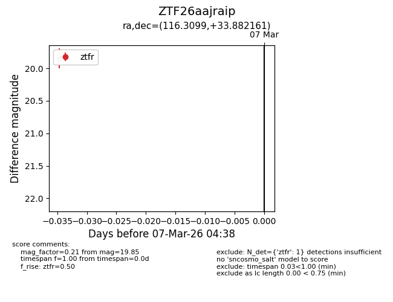
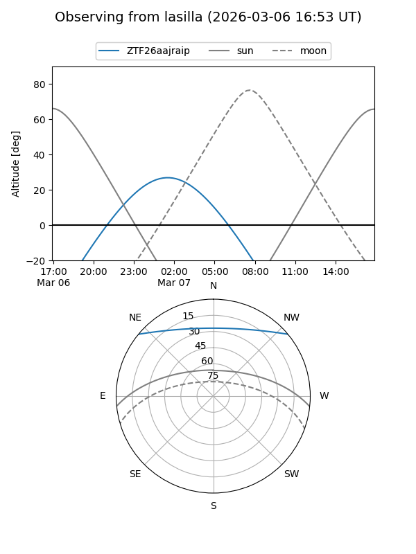
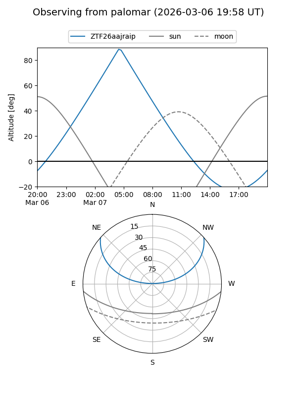

ZTF26aajraip
Target ZTF26aajraip at 2026-03-07 04:39
Aliases and brokers:
FINK: link
Lasair: link
ALeRCE: link
alt names
ZTF26aajraip (ztf,fink_ztf)
Coordinates:
equatorial (ra, dec) = 116.3099,+33.88216
equatorial (HMS+DMS) = 07:45:14.38,+33:52:55.78
galactic (l, b) = (186.1178,+25.21815)
Flags:
Photometry:
last ztfr=19.85
1 ztfr detections
Lightcurve

Visibility


Additional plots